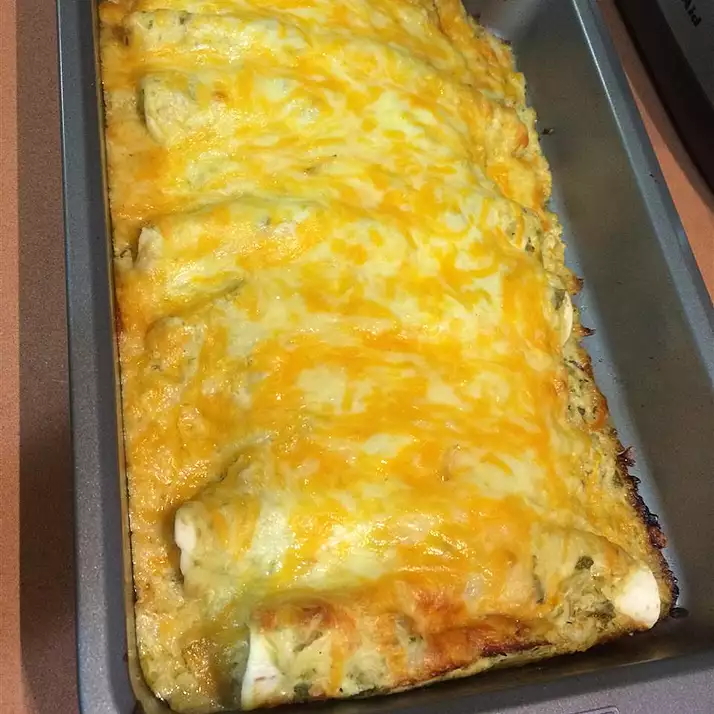

Green chile enchiladas

green chile enchiladas are made up of cheese green chile mushroom cream and chicken breast.
The Green-Chile-Enchiladas enchildas This is such an easy enchilada dish to make and a great use for leftover
turkey. It's also very easy to adapt to different tastes just by changing an ingredient or two.
when making enchiladas the recipes should be easy to make simple steps
Ingridients
- 3 cups shredded cooked chicken breast
- 1 half cups sour cream, divided
- 1 jar chunky, mild green chile salsa, divided
- 1 package shredded mild Cheddar cheese,divided
- 1 packeges shredded Monterey Jack cheese, divided
- 8 inch flour tortilla
steps
- Boil chicken breast
- Shred chicken
- Preheat oven to 300 degree
- spray the cooking pan with oil
- put together the dish by placig tortilla fallow by chicken than cream
- place dish in the already heated oven